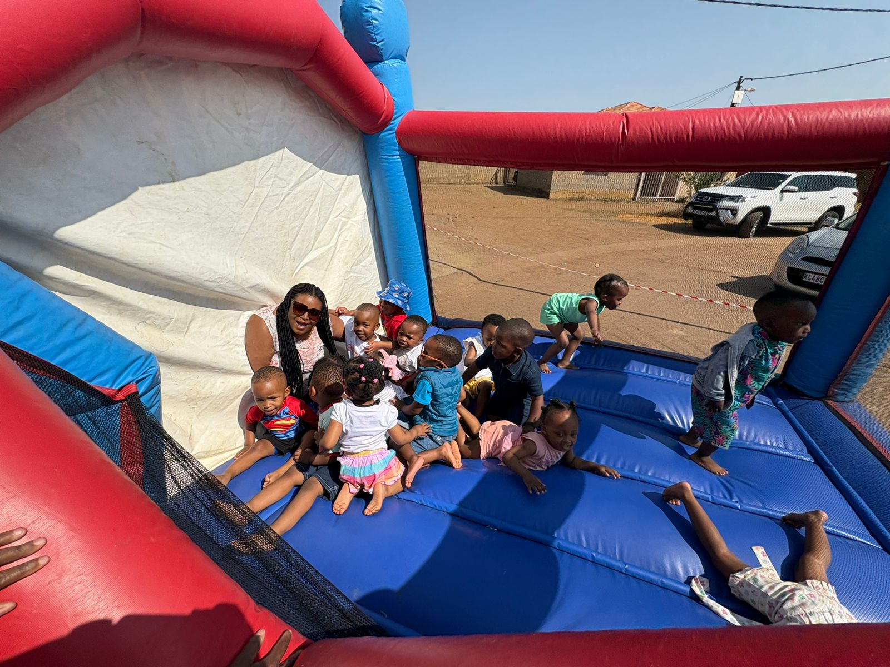

Development
Aug 1, 2026
Why Early Socialization Matters for Toddlers
Socializing early can help toddlers develop empathy, language skills, and emotional regulation long before they hit primary school...
Socializing early can help toddlers develop empathy, language skills, and emotional regulation long before they hit primary school. At Jolly Juniors Academy, we place a high emphasis on interactive play.
When children interact with their peers, they are forced to negotiate, share, and communicate their needs effectively. This peer-to-peer learning environment accelerates their cognitive milestones much faster than independent play alone.
Key Benefits:
- Language Development: Listening to peers encourages faster vocabulary adoption.
- Conflict Resolution: Learning how to share toys builds foundational negotiation skills.
- Confidence: Being comfortable in groups prepares them for future schooling.
Encourage your children to participate in group activities, whether it's through our extra-curriculum programs or weekend playdates!